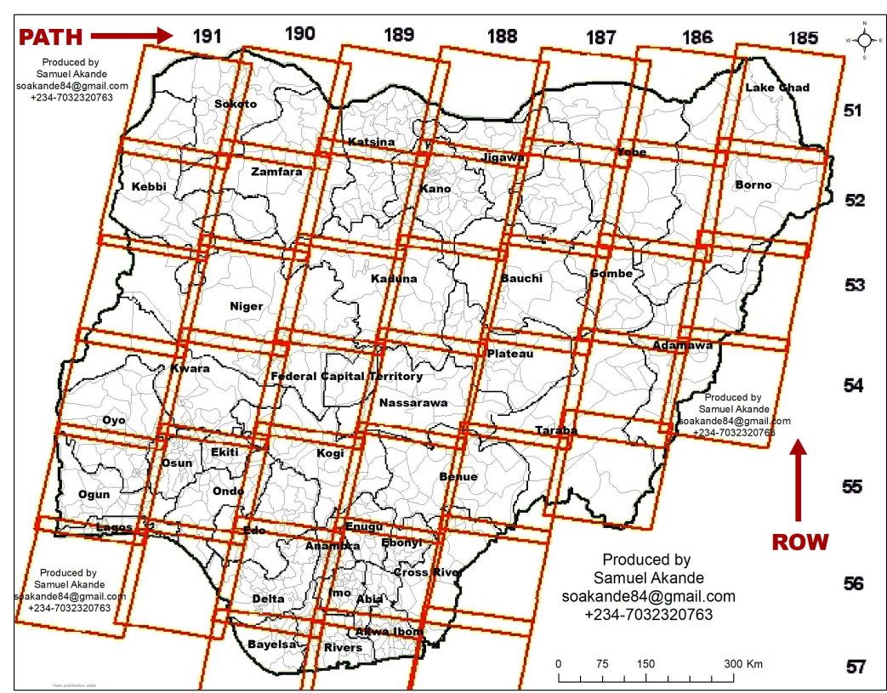
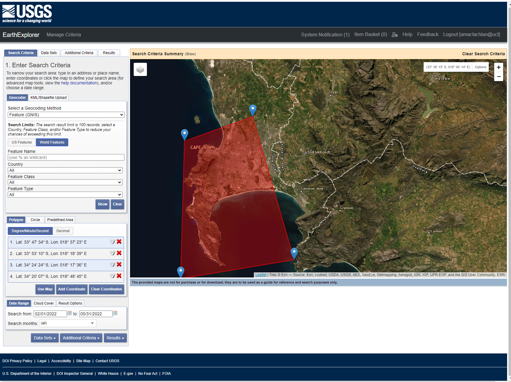
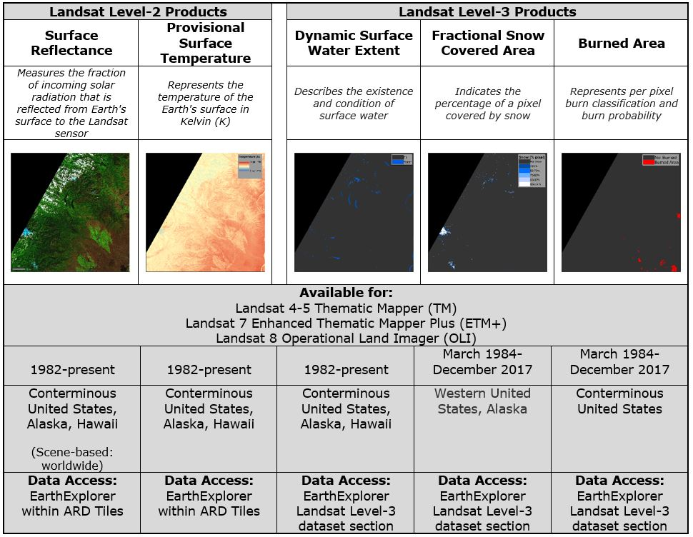
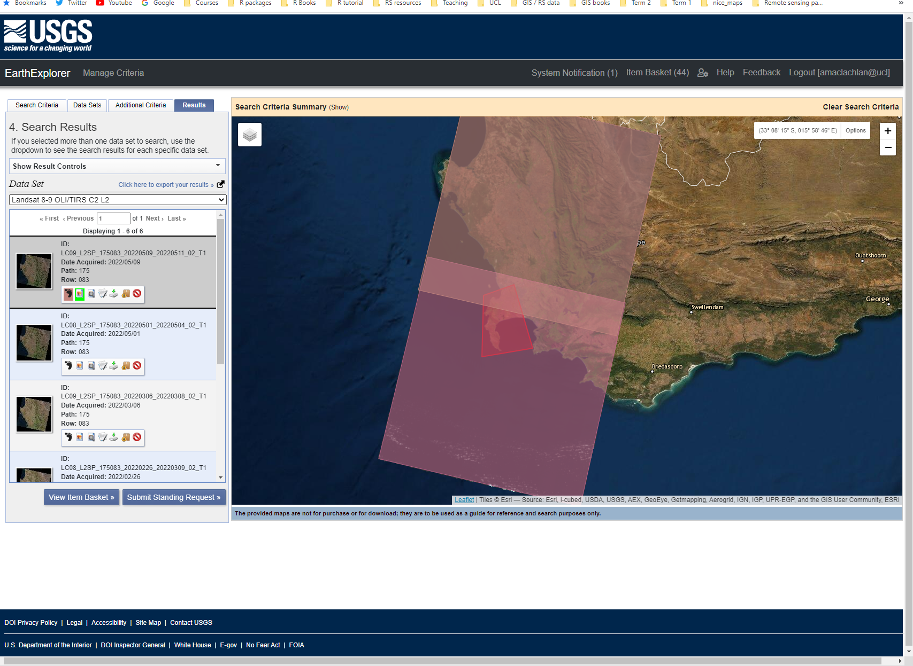
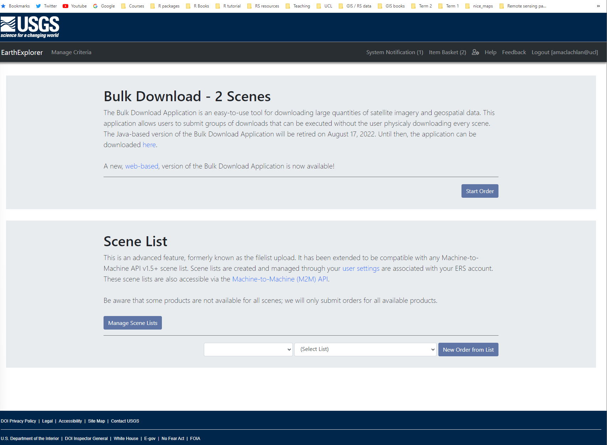
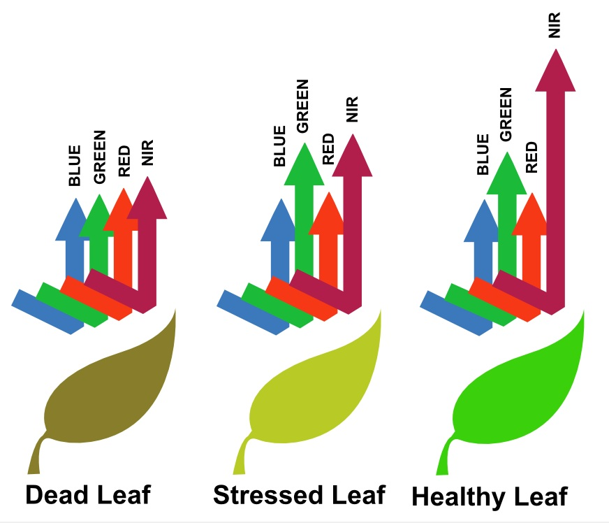
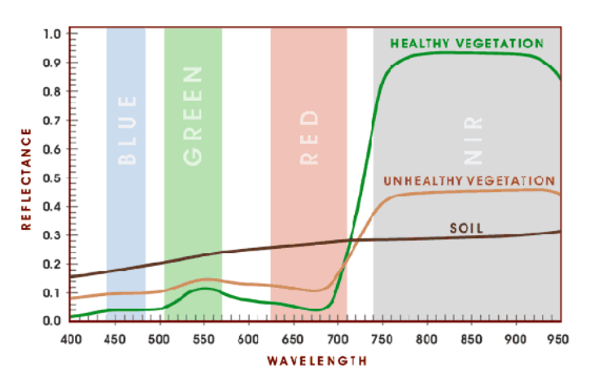

library(terra)
library(raster)
library(RStoolbox)
library(tidyverse)
library(fs)
library(rgdal)
## Import meta-data and bands based on MTL file
mtlFile <- ("prac_3/Lsatdata8/LC08_L1TP_175083_20211005_20211013_01_T1_MTL.txt")
metaData <- readMeta(mtlFile)
lsatMeta <- stackMeta(metaData)
# surface reflectance with DOS
l8_boa_ref <- radCor(lsatMeta, metaData, method = "dos")
#terra::writeRaster(l8_boa_ref, datatype="FLT4S", filename = "prac_3/Lsatdata8/l8_boa_ref.tif", format = "GTiff", overwrite=TRUE)
# Radiance
lsat_rad <- radCor(lsatMeta, metaData = metaData, method = "rad")
#terra::writeRaster(lsat_rad, datatype="FLT4S", filename = "prac_3/Lsatdata8/lsat_rad.tif", format = "GTiff", overwrite=TRUE)3 Corrections
3.1 Resources
This week
Joyce, K., 2013. Radiative transfer and atmospheric correction video
-
Jensen, J.R., 2015. Introductory digital image processing: a remote sensing perspective. Prentice-Hall Inc.
Atmospheric correction, Chapter 6, p.208
Types of Geometric correction, Chapter 7, p.242
Mosaicking, Chapter 7, p.267
Image enhancements, Chapter 8, p.273
-
Schulte to Bühne, H., Pettorelli, N., 2018. Better together: Integrating and fusing multispectral and radar satellite imagery to inform biodiversity monitoring, ecological research and conservation science. Methods in Ecology and Evolution 9, 849–865.
- Data fusion video created for the paper
3.2 Atmosphereic correction
3.2.1 DOS
As described in the lecture, a rather simple method to correct raw satellite (or any other) imagery is called Dark Object Subtraction (DOS). This uses the logic that the darkest pixel within the image should be 0 and therefore any value that it has can be attributed to the atmosphere.
So in order to remove the effect of the atmosphere we can the subtract the value from the rest of the pixels within the image.
Here, we will need to download some raw satellite imagery, that is in Digital Number (DN).
Then we will apply the formula to calculate the reluctance of the pixels by removing atmosphere effects.The formula for the cosine of the solar zenith angle correction (COST) is, this is the same as DOS but DOS omits TAUz. The following has made use of the documentation from GIS Ag Maps.com
\[\rho_{\lambda}= \frac{(Lsat_{rad} - Lhaze1percent_{rad})\pi * d^2}{EO_{\lambda} * cos\theta S * TUAv + TAUz}\]
Where…
- \(\rho_{\lambda}\) is the corrected value (DOS applied)
Top line of equation…
\(Lsat_{rad}\) = at sensor radiance (recall DN goes to radiance through the regression equation we saw!)
-
\(Lhaze1percent_{rad}\) = amount of radiance that is due to the atmosphere (atmospheric haze) from path or scatter radiance. Very few surfaces are completely black so it is assume that the darkest surface has a 1% reflectance. Various methods to caclcualte this…
- Look up tables
- Selecting the darkest pixels (shadow, water)
When we have the haze amount then deduct 1% from that value per band as few targets are absolutely black.
For COST this this:
\[ 0.01 reflectance = 0.01 *\frac{Eoλ * cosθs^2} {d² * pi}\]
For DOS it’s
\[ 0.01 reflectance = 0.01 *\frac{Eoλ * cosθs} {d² * pi}\]
-
\(EO_{\lambda}\) or \(ESUN_{\lambda}\) = mean exoatmospheric irradiance
- irradiance = power per unit area received from the Sun
- exoatmospheric = just outside the Earth’s atmosphere
- These values are available from the Landsat user manual such as table 5.3 in the Landsat 7 user guide
\(cosθs\) = cosine of the solar azimuth, remember from the lecture that this is 90 - solar elevation.
\(d\) = the Earth-sun distance and is in the
.MTLfile\(pi\) = 3.14159265
Once we have all these values then we can do the following:
- Compute the haze value for each band (although not beyond NIR) - this is the amount of radiance that is due to the atmosphere (atmospheric haze), see above methods.
- Convert DN to radiance
- Compute the 1% reflectance value using the equations above
- Subtract the 1% reflectance value from the radiance. Here we are saying that we have a pixel (e.g. darkest pixel), we know what 1% of the total radiance is and we are subtracting that from the darkest pixel (which still has atmospheric effects) to account for most targets not being completely black.
We can now plug the values in:
\[\rho_{\lambda}= \frac{(Lsat_{rad} - Lhaze1percent_{rad})\pi * d^2}{EO_{\lambda} * cos\theta S * TUAv + TAUz}\]
Where the \(Lhaze1percent_{rad}\) is the haze value (e.g. darkest pixel) minus 1% of the total radiance. This 1% was computed from the equations above.
Within this equation:
\(TAUv\) = 1.0 for Landsat and \(TAUz\) = cosθs for COST method. DOS is the same, but without \(TAUz\)
Of course we can do this in R (or any other software) with just one function! First we need to download some raw satellite data that comes in the Digital Number (DN) format. This is the exact same process as we saw in week 1, expect this time select the Collection 1 (or 2), Level-1 bundle. At the moment this process won’t work with Landsat 9. However, as this involves a large amount of data and it’s unlikely you will need to do this in the module of data read through the following code and then move to the next section
hazeDN <- RStoolbox::estimateHaze(lsat, hazeBands = 2:4, darkProp = 0.01, plot = TRUE)
lsat_sref <- radCor(lsatMeta, metaData = metaData, method = "dos",
hazeValues = hazeDN, hazeBands = 2:4)https://rpubs.com/delViento/atm_corr
3.2.2 Radiance (or DN) to Reflectance
As noted in the lecture there are a wide range of more sophisticated methods (beyond Dark Object Subtraction) to convert raw Digital Numbers or radiance to surface reflectance.
Whilst this is a bit beyond the scope of this module, if you look again at the Landsat 7 Data Users Handbook you will see a radiance to reflectance calculation that can be used…“For relatively clear Landsat scenes”:
\[\rho_{\rho}= \frac{\pi* L_{\lambda} * d ^2}{ESUN_{\lambda} * cos\theta_S}\] and…we’ve seen all these values in the DOS formula, except \(\rho_{\rho}\) which is Unitless planetary reflectance
…this method is still used in current research too, for example it’s listed in this paper of Land Surface Temperature retrieval by Sekertekin and Bonafonu, 2020. See Appendix C for Landsat 5, 7 (that use the above equation) and Landsat 8, that uses this slight variation…
\[\rho_{\rho}= \frac{M_{p}* Q_{CAL} + A_p}{sin\theta_{SE}}\] Where…
\(M_p\) is the band-specific multiplicative rescaling factor from the metadata
\(A_p\) is the band-specific additive rescaling factor from the metadata
\(QCAL\) is the digital number
\(\theta_{SE}\) is the sun elevation angle from the metadata file.
Although it’s worth noting that this is Top of Atmosphere reflectance (TOA).
Radiance is how much light the sensor sees.
Reflectance is the ratio of light leaving the target to amount striking the target. Here will still have atmopsheric effects in the way of our true apparent reflectance. Confusingly all of these can be termed reflectance and indeed sometimes radiance is referred to as reflectance.
TOA reflectance changes the data from what the sensor sees to the ratio of light leaving compared to striking it. BUT, the atmosphere is still present. If we remove the atmopshere we have apparent reflectance (sometimes called Bottom of Atmosphere reflectance). DOS gives us a version of apparent reflectance.
3.3 Accessing data
Ok, so we can deal with a single image, but what happens when an image doesn’t cover your entire study area. We must select two images are mosaic (or merge) them together. Landsat data (and most satellite data) is collected using some form of Worldwide Reference System. This splits the data based on PATH (columns) and ROWS.

Before we start with merging we need to download two satellite tiles to merge together. The problem is that Landsat tiles won’t align with administration boundraies (or they might if you are lucky). For my example city of Cape Town i need at least two, possible three Landsat tiles to be merged together. In USGS Earth Explorer you can upload a shapefile or KML so you can search for tiles to cover the area. However, this is rather slow and the shapefile must only contain one polygon (cape town includes an island too). You can, however, draw a boundary to search within:

In my example i am going to select two tiles, i know which two to select from looking at the GADM boundary for Cape Town.
When doing this:
- Select two images as temporally close to each other as possible
- Try and make sure there is no (or very little cloud cover)
- In this case select Landsat Collection 2 level 2 to get surface reflectance.
Notes on Landsat Collections. The different collections denote a major difference in processing of the data. Where as the levels denote a specific product. There is no clear guide online that explains this, so be careful when reading papers!
For example…
A primary characteristic of Collection 2 is the substantial improvement in the absolute geolocation accuracy of the global ground reference dataset used in the Landsat Level-1 processing flow
Collection 2 was released in 2020 and has some updates, see this summary of differences for collection 1 vs collection 2. The collection 2 auxiliary data can also be downloaded from Earth Explorer.
Whereas levels will provide:
Level 1 is delivered as a Digital Number
Level 2 includes surface reflectance and surface temperature
Level 3 science products are specific products generated from the data such as Burned Area, surface water extent
Most of the level datasets are tiered, this is denoted through the file name that might end with T1. Tiers are based on data quality and level of processing. Tier 1 datasets are the best quality, tier 2 are good but might have some cloud that affects radiometric calibration covering ground control points.
There is also a U.S. Analysis Read Dataset (ARD) that includes a bundle of data (Top of Atmosphere (TOA) reflectance, TOA Brightness Temperature, Surface Reflectance , Surface Temperature and Quality Assessment) in a specific US grid strucutre. This removes the need to process data between the difference stages for applications in the US.
To conclude, we have collections, followed by levels, followed by tiers.

In this case I want to download two tiles from Collection 2, Level 2. You can view the tiles and preview the data in Earth Explorer:

Looking at the options below each tile icon in the search results you can either download the tiles individually or add them to a basked (it’s the box icon). After clicking the box on the products you want to download > click the basket (top right) > you will then be presented with this screen where you click start order and then follow the prompts to download multiple tiles at once.

3.4 Merging imagery
Open our two tiles, in my case i have move my tiles into two separate folders. So i will do this twice, note that we could automate this if we had a large number of tiles. I have also downloaded one Landsat 8 tile and one Landsat 9 tile.
library(tidyverse)
library(terra)
library(fs)
# List your raster files excluding band 8 using the patter argument
listlandsat_8<-dir_info(here::here("prac_3", "Landsat", "Lsat8"))%>%
dplyr::filter(str_detect(path, "[B123456790].TIF")) %>%
dplyr::select(path)%>%
pull()%>%
as.character()%>%
# Load our raster layers into a stack
terra::rast()For Landsat 9
This might take about 2 minutes…
m1 <- terra::mosaic(listlandsat_8, listlandsat_9, fun="mean")3.5 Enhancements
Using our merged Landsat data we can now undertake some basic enhancements to try and emphasize / exaggerate certain features or spectral traits.
3.5.1 Ratio
Ratioing is the difference between two spectral bands that have a certain spectral response meaning it is easier to identify a certain landscape feature…for example…
- The Normalised Difference Vegetation Index is based on the fact that healthy and green vegetation reflects more in the NIR but absorbs in the Red wavelength

Here, we can visually see the spectral trait:

We can leverage the fact that healthy vegetation has this spectral trait and use the NDVI index should we wish to highlight areas with healthy vegetation.
\[NDVI= \frac{NIR-Red}{NIR+Red}\] In R this would be:
We can reclassify this to pull out certain areas, for example, only where NDVI is equal to or greater than 0.2
There are many other ratios, all of which are detailed on the Index Database and most follow the same formula. For example, the Normalized Difference Moisture Index (NDMI):
For Landsat sensors 4-7:
\[NDMI= \frac{Band 4-Band 5}{Band 4 + Band 5}\] For Landsat 8, bands are increased by 1.
3.5.2 Filtering
Filtering refers to any kind of moving window operation to our data which can be saved as a separate raster file. As we saw in the lecture this can include low or high pass filters. Here \(w\) means window. We can also set a weight matrix (as seen in the lecture):
3.5.3 Texture
The basics of texture were covered in the lecture. To apply texture analysis to data in R, we can use the glcm package which has a selection of eight texture measures, and we can apply these per band…for example…Note, to use this you must have RTools installed as it makes use of the C++ language.
Below we can specify:
- the size of the moving window
- the shift for co-occurrency (or second order) as seen in the lecture. If multiple shifts are supplied, glcm will calculate each texture statistic using all the specified shifts and return the mean value of the texture for each pixel
- the measures we want, for full equations see Texture Metrics Background
Note, that we commonly don’t use the pancrhomatic band in landcover classification, however as it is 15m it can produce some useful outputs.
Currently the glcm package only accepts raster layers from the raster package so we first need to convert this to a raster layer…this will take 7-10 minutes…increasing the window size and selecting less statistics should speed this up.
Depending on your study area the texture measures might not show much, but in this example from Lu et al. 2012 what does it highlight or make more prominent.
3.5.4 Data fusion
In the simplest form data fusion is appending new raster data to the existing data or making a new raster dataset with different bands…here we can do this with the texture measure we have created (and the original spectral data if you wish). We are getting to the stage now where remote sensing is a merge of science and art. Specifically the science is how we correct and apply methods, the art is about how we select the right data / transform it / alter it to produce an output. There is never a completely right answer as we will see in future practicals.
To create decision level (or layer) fusion we append our new datasets to our existing data…
Recall from the lecture there is also object fusion and image fusion.
3.5.5 PCA
Principal Component Analysis is designed to reduce the dimensionality of our data. In this case we might want to scale our data, meaning that we can compare data that isn’t measured in the same way (as we have spectral and texture data). To do so we can use the function scale, that by default standarize the data by subtracting the mean and dividing by the standard deviation. If we just wanted to subtract the mean we could set scale=FALSE as an argument.
When we use rasterPCA() we can set the number of samples nsamples to be used for PCA which are then applied to the rest of the data to try and make this more efficient…
Also note that spca=TRUE which corresponds to centered and scaled input data
Once the rasterPCA() has completed run the following code to get the proportion of variance explained by each PCA component and the cumulative proportion of the variance explained (from all the PCA layers compared to the original input data). Remember that PCA is trying to:
- Transform multi-spectral data into uncorrelated and smaller dataset
- Keep most of the original information
- The first component will (should) capture most of the variance within the dataset
summary(pca$model)In my case component 1 (of 10) explains 77.62% of the variance from the entire dataset…how might this be useful in future analysis?
Finally, to plot one of the PCA bands….
plot(pca$map$PC1)3.6 Learning diary
Consult the assignment requirements document and complete your learning diary entry in your Quarto learning diary.
3.6.1 Useful blogs
3.7 Feedback
Was anything that we explained unclear this week or was something really clear…let us know using the feedback form. It’s anonymous and we’ll use the responses to clear any issues up in the future / adapt the material.